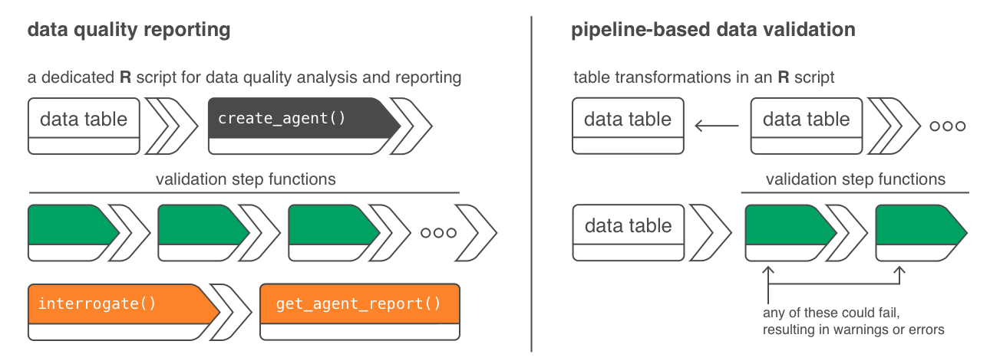
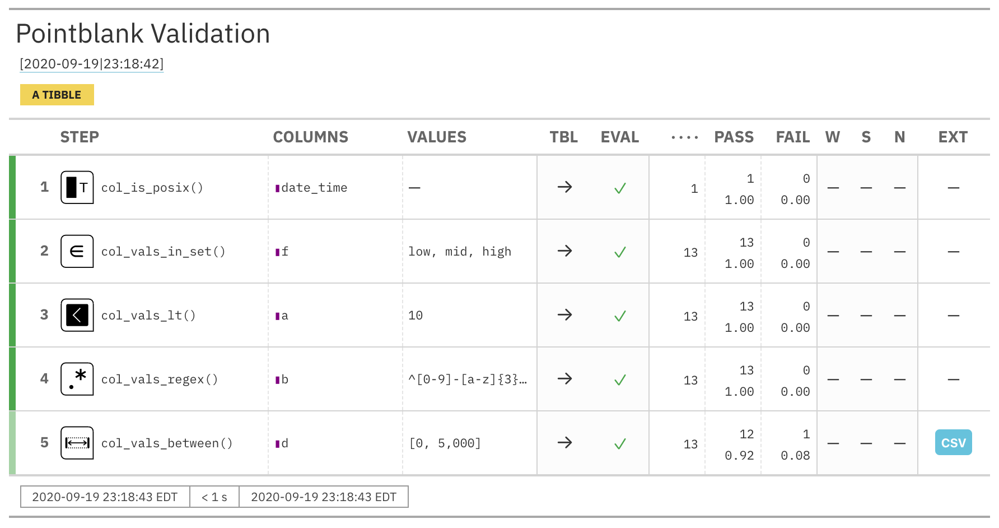

The pointblank package is, at its very core, a thing to validate your data. The data specifically needs to be tabular data but could be in the form of R data frames and tibbles, or, database tables (tbl_dbi objects).

There are two basic workflows, and they have names to distinguish them: (1) data quality reporting and (2) pipeline-based data validation. The first aims to make a complete reporting of target table with as many validation step functions as the user wishes to write to get an adequate level of validation coverage for that table. The second workflow is more ideal in a data-transformation pipeline involving tabular data. The principal mode of operation there is to use validation functions to either warn the user of unforeseen data integrity problems or stop the pipeline dead so that dependent, downstream processes (that would use the data to some extent) are never initiated. Both workflows use a common set of validation step functions, ‘action levels’ (i.e., failure thresholds) can be set in a stepwise manner, and all side effects and reporting behaviors can be defined using R functions.
When trying to assess the state of data quality for any tabular object, we want to perform a full accounting of assertions on the data without stoppage at any point. We use something called an agent to collect our validation instructions, perform the interrogation, and then serve as an artifact for reporting. The agent is created with the create_agent() function. We give that agent the name of the target table which, again, can be data frame, tibble (tbl_df), or, any flavor of database tbl object (tbl_dbi).
The agent naturally needs directives on what to do with the table, so, we invoke validation step functions. There are lots of them. Some check for the existence or type of column (col_exists() or the group of col_is_*() functions). Others check each cell in a column for satisfying a specific condition (the col_vals_*() functions). We can use as many of these as necessary for satisfactory validation testing of the table in question.
The final function that needs to be called is the interrogate() function. You see, the validation step functions, when called on an agent object don’t do anything with the data. They are instructions. With interrogate() those instructions turn into actions, with the agent dutifully carrying out the interrogation plan.
For our examples going forward, we’ll use the small_table dataset. It’s included in the pointblank package. It isn’t very large, which makes it great for simple examples. Here it is in its entirety:
small_table
#> # A tibble: 13 x 8
#> date_time date a b c d e f
#> <dttm> <date> <int> <chr> <dbl> <dbl> <lgl> <chr>
#> 1 2016-01-04 11:00:00 2016-01-04 2 1-bcd-345 3 3423. TRUE high
#> 2 2016-01-04 00:32:00 2016-01-04 3 5-egh-163 8 10000. TRUE low
#> 3 2016-01-05 13:32:00 2016-01-05 6 8-kdg-938 3 2343. TRUE high
#> 4 2016-01-06 17:23:00 2016-01-06 2 5-jdo-903 NA 3892. FALSE mid
#> 5 2016-01-09 12:36:00 2016-01-09 8 3-ldm-038 7 284. TRUE low
#> 6 2016-01-11 06:15:00 2016-01-11 4 2-dhe-923 4 3291. TRUE mid
#> 7 2016-01-15 18:46:00 2016-01-15 7 1-knw-093 3 843. TRUE high
#> 8 2016-01-17 11:27:00 2016-01-17 4 5-boe-639 2 1036. FALSE low
#> 9 2016-01-20 04:30:00 2016-01-20 3 5-bce-642 9 838. FALSE high
#> 10 2016-01-20 04:30:00 2016-01-20 3 5-bce-642 9 838. FALSE high
#> 11 2016-01-26 20:07:00 2016-01-26 4 2-dmx-010 7 834. TRUE low
#> 12 2016-01-28 02:51:00 2016-01-28 2 7-dmx-010 8 108. FALSE low
#> 13 2016-01-30 11:23:00 2016-01-30 1 3-dka-303 NA 2230. TRUE highWhat follows is a very simple validation plan for a very simple table. We will test that:
date_time column is indeed a date-time columnf only has the values "low", "mid", and "high"
a are all less than 10
b fit a particular regex pattern ("^[0-9]-[a-z]{3}-[0-9]{3}$")d has values in the range of 0 to 5000 (this is not entirely true!)agent <- small_table %>% create_agent() %>% col_is_posix(vars(date_time)) %>% col_vals_in_set(vars(f), set = c("low", "mid", "high")) %>% col_vals_lt(vars(a), value = 10) %>% col_vals_regex(vars(b), regex = "^[0-9]-[a-z]{3}-[0-9]{3}$") %>% col_vals_between(vars(d), left = 0, right = 5000) %>% interrogate()
The five OK messages means that all of the individual validations in each of those five validation steps passed. Printing the agent object gives a step-by-step breakdown of the interrogation process.
agent

Let’s take a close look at how to interpret this report. The STEP column provides the name of the validation step function used as a basis for a validation step. COLUMNS shows us the target column for each validation step. The VALUES column lists any values required for a validation step. What is TBL? That indicates whether the table was mutated just before interrogation in that validation step (via the preconditions argument, available in every validation step function). The fancy script ‘I’ values show us that the table didn’t undergo transformation, and that we are working with the identity table. EVAL lets us know whether there would be issues in evaluating the table itself (catching R errors and warnings); the check marks down this column show us that, here, there were no issues.
The total number of test units is provided next in UNITS, then the number and franction of passing test units (PASS), and then the number and fraction of failing test units (FAIL). The W, S, N indicators tell us whether we have entered either of the WARN, STOP, or NOTIFY states for these validation steps. Because we didn’t set any threshold levels for these states (that would be done with the action_levels() function), they are irrelevant for this report. Finally, the EXTRACT indicator tells us the number of data extract rows available for failed test units. For step 5, the col_vals_between() validation step, there is a data extract available (with 1 row). We can examine that extract with the get_data_extracts() function:
get_data_extracts(agent, i = 5)
#> # A tibble: 1 x 8
#> date_time date a b c d e f
#> <dttm> <date> <int> <chr> <dbl> <dbl> <lgl> <chr>
#> 1 2016-01-04 00:32:00 2016-01-04 3 5-egh-163 8 10000. TRUE lowRecall that validation step 5 asserted that all values in column d should be between 0 and 5000, however, this extract of small_table shows that column d has a value of 10000 which lies outside the specified range.
This short demo shows some of the salient features of defining validation steps and interpreting the report. There are many more things you can do. Have a look at the documentation for some of the validation step functions for further examples.
The second workflow, pipeline-based data validations, somewhat simplifies the process for checking data directly. There is no agent involved here and we instead call validation step functions directly on the data table objects. Because no agent, there is no report, and the idea is that the side effects are most important here. We can trigger warnings, raise errors, or write out logs when exceeding specified failure thresholds. The data just passes through the validation functions (some data in, the same data out). Where would we do this? When importing data, for instance, we could pass the incoming data through a few validation step functions, possibly with customized threshold levels set (by default, any test units failing will result in an error). We could also use a set of validation step functions further down the script on transformed data as a QA/QC measure. If bad data quality might be ruinous for a downstream report (especially in an automated context), it’s better to stop the process through pointblank validation tests and get to the heart of the matter.
Let’s adapt the previous example to optimize it to the pipeline-based data validation workflow:
small_table %>% col_is_posix(vars(date_time), actions = al) %>% col_vals_in_set(vars(f), set = c("low", "mid", "high"), actions = al) %>% col_vals_lt(vars(a), value = 10, actions = al) %>% col_vals_regex(vars(b), regex = "^[0-9]-[a-z]{3}-[0-9]{3}$", actions = al) %>% col_vals_between(vars(d), left = 0, right = 5000, actions = al)
Error: Exceedance of failed test units where values in `d` should have been between `0` and `5000`.
The `col_vals_between()` validation failed beyond the absolute threshold level (1).
* failure level (1) >= failure threshold (1) Great! This stringent threshold setting stopped the evaluation of the pipeline and, in turn, stops the running script if it’s deployed and automatically running on the regular. The action_levels() function is quite powerful and it allows us to define custom functions to react to entering each of the three states. In this type of workflow we don’t need to define those functions, pointblank will automatically do the sensible thing and provide a stock warning() or stop() message.